Common configuration options
Connection Details

- Method : Select any of the selection methods available
- Host : The IP or Hostname of the machine we want to connect to.
- Port : Port number to use for this connection.
- Run with sudo : * Pending
- Use autossh : * Pending
- TAB/Window Title : The name will be assigned to this tab or window. (Useful for password managers, that use the window title to execute macros, or to identify each connection on the taskbar).
- Launch on start up : If this connection should be launched automatically each time Ásbrú starts for the first time.
-
Reconnecton on disconnection : If there is a remote disconnection, reconnect automatically.
-
Authentication
-
KeePass button : If you have KeePass integration available, the button will be enabled. To see the use of this feature read KeePass Integration
-
User / Password : Authenticate using the traditional logging sequence of typing a user and password.
- Private Key : Use a public or private key to login into the remote server.
- Private Key : Select your private key, or leave black if you are going to use your public key.
- User / Passphrase : The user and passphrase that will be used to automate your login.
- Manual : Do not automate login, let me do all the authentication sequence.
-
Important information about passwords
The password / passphrase fields can have 3 possible values.
- Password field
- Empty : During the login process you will be requested to type your password
- Value : The value saved in the field will be used as the password to automate your login.
- Passphrase field
- Empty : During the login process the passphrase will not be asked. It asumes your have configured a passwordless key.
- Value =
<<ASK_PASSS>>: If you type this keyword, the Ásbrú will prompt for the passphrase when it detects that has been requested by the login process. This is useful if you do not want to store the passphrase in its configuration file. - Value : Any other value will be stored in Ásbrú's configuration file. And it will be used to automate the login process.
- The value can be the password, or a KeePass mask (see below).
If you are aiming for the highest level of security and automation at the same time, you need to use KeePass Integration
Advanced Parameters
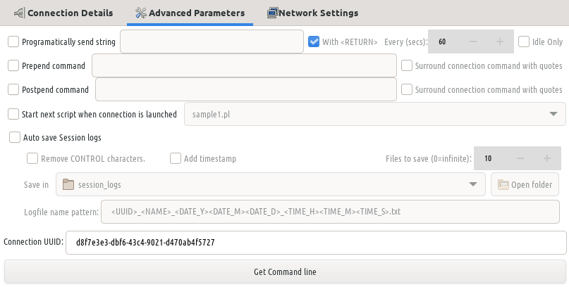
- Programmatically send a string : Send a specified regex expression every selected seconds to the terminal.
- Prepend command : Add this command before the ssh command connection string.
- Start next script when connection is launched : * Pending
- Auto save session logs : Save session log at the end of the session. Select the location.
- Log patter name: Define the pattern to name your session file.
Network Settings
This networking options override the Global Networking options for this connection.
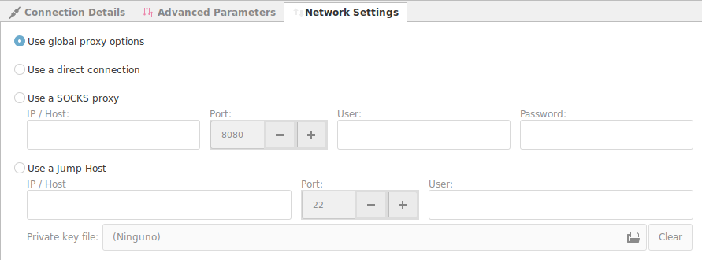
- Use global proxy options : Use the globally predefined Networking options.
- Use direct connection : If you declared a Global Proxy and you do not need it for this connection.
- Use SOCKS proxy : Use a SOCKS proxy to exit the local network.
- Jump Server : Use a jump server to exit the local network, or connect to an internal machine behind a FireWall.
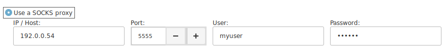
If your network administrator has added a SOCKS server to the network and grants you access to it, you will have to select and configure the SOCKS Proxy.
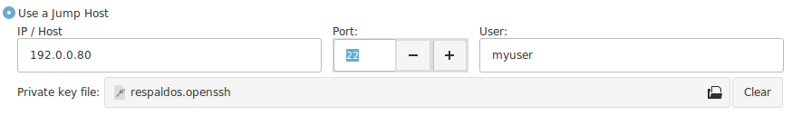
If you have SSH access to a remote machine in your network, that has access to the a local machine on the remote network. Then you can use this technique to access to an external machine behind a firewall, that has no public address.
You need to have a public key installed in your Jump Server to be able to use it as an intermediate machine to access the other network.
It can be a default public key, or a personal private key that you were assigned.
(Pre / Post) Exec
This commands will be executed immediately before (Pre) the connection is launched. And after (Post) the connection has been closed.
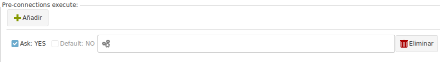
This commands are executed in the local computer, not on the remote terminal.
You may add many commands, and configure which command will be the default, and if Ásbrú should ask before executing it.
Important
The terminal interaction and login will be frozen until the external application is finished. Or is demonized.
Example, before launching the terminal start a local apache server
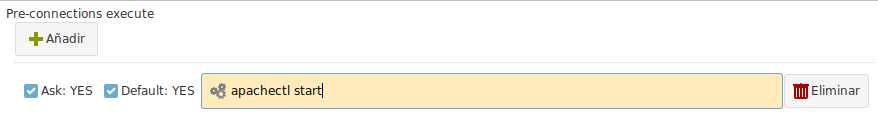
After closing the terminal, execute pdfshufler
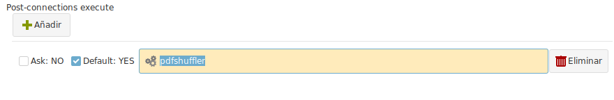
Execution examples, with a gtk application to see the results.
Pre exec is configured to ask, is waiting for you to execute an available command from the list.
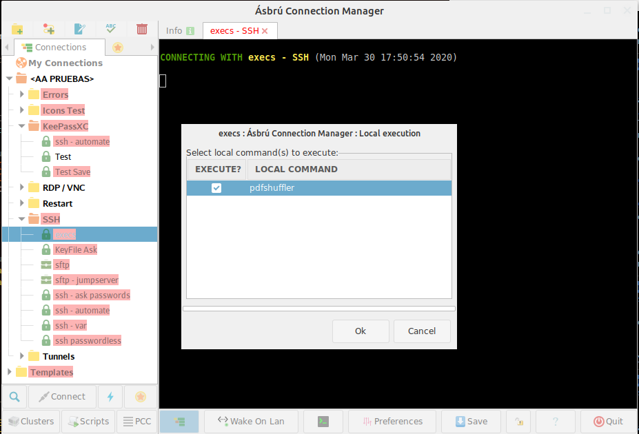
Application is launched and the terminal waits for the end of the execution.
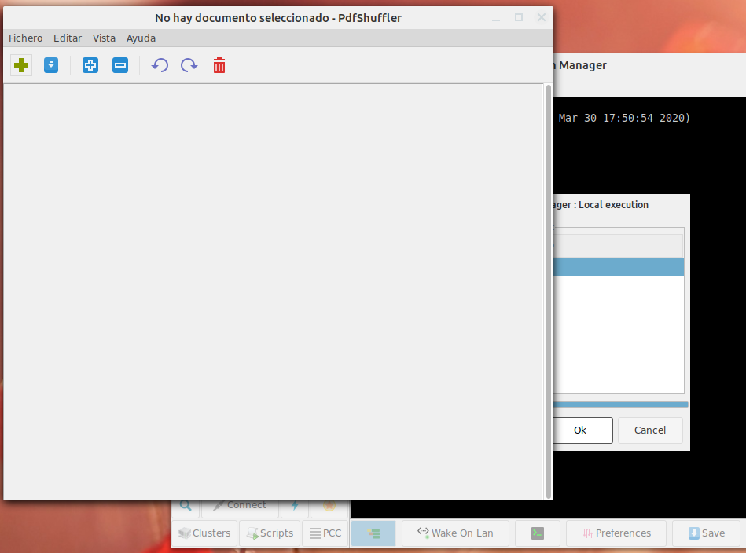
We exit the terminal, the terminal is closed and the post exec command is executed.
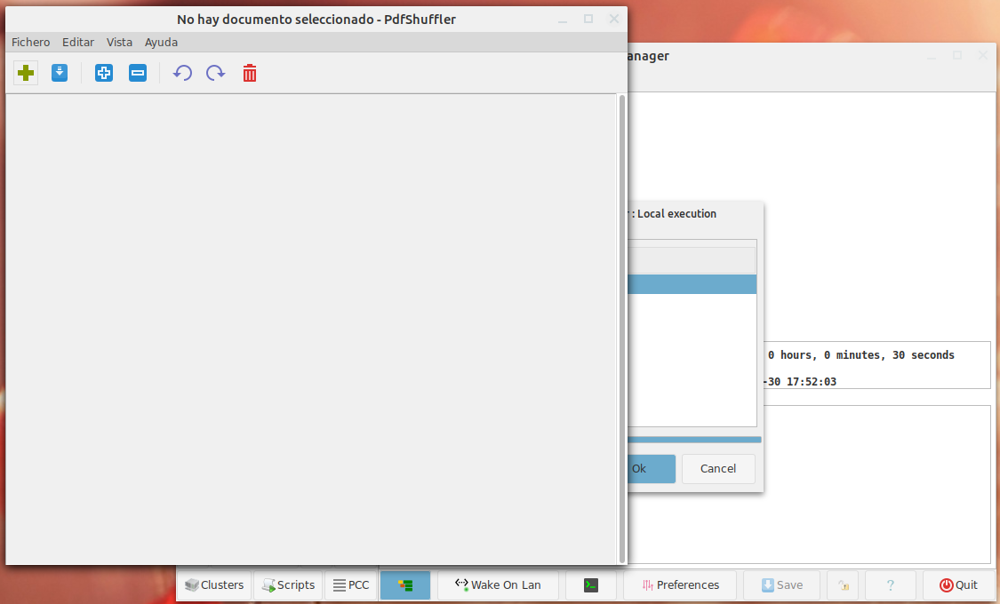
Possible uses
Launch : an IDE, a Database Client (DBeaver), start a local scripts that uploads or downloads files, etc.
Expect
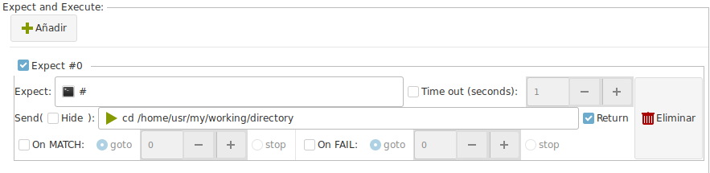
You can create and execute a sequence of automated actions that will be executed during your login process.
- Expect : Regular expression that defines what patter to wait from the terminal.
- Timeout : How long to wait for the pattern and abort if it does not presents.
- Send : When the pattern has a match, send the next sequence of characters.
- Return : Add a CR at the end of the string.
- Hide : If the content of this box should be treated as a password field. Hide visual information for peering eyes.
- On MATCH / Fail : Execute the next Expect #number in case of MATCH or Fail.
- Delete : Remove the selected rule.
Executed during the login process only
This expect actions take place only during the login process.
It helps you to automate a login sequence and a continuous set of actions.
But they do not work after the complete login sequence ends.
Ásbrú is not constantly monitoring your typing, so as soon as the login process ends, and the last expect is executed, there will be no more expect detection an execution.
More detailed information
For a more detailed information on Expect read : Introduction to Expect
Remote Macros
Remote Macros have the same principle as the Global Remote Commands
Note
This commands will show on the popup menu for this connection only, and no others.
Local Macros
Local Macros have the same principle as the Global Local Commands
Note
This commands will show on the popup menu for this connection only, and no others.
User Variables
This have the same principle as the Global Variables
Note
Will be available only for this particular connection.
Terminal Options
You can override the Global Terminal Options and Look&Feel of any particular connection.
Enable "Use these personal options"
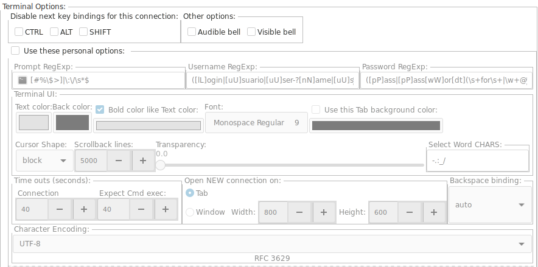
Stand out a terminal
Perhaps you want to add a dark red color to a terminal to note that you are connected to a production server and not to a testing server.